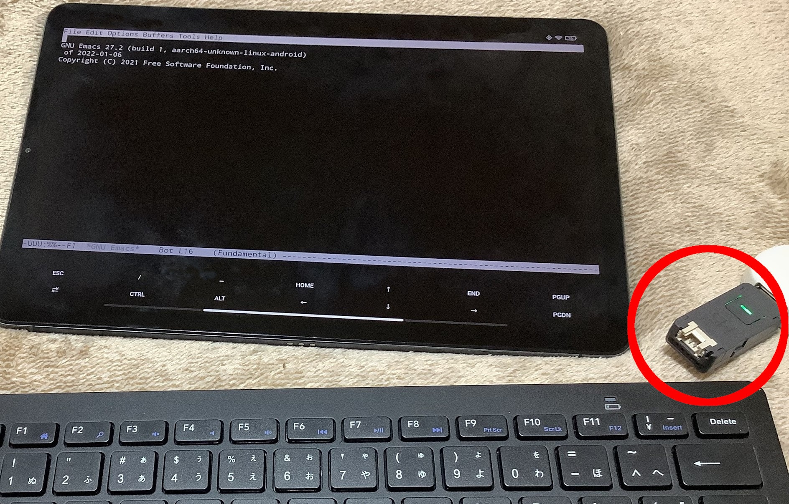

OS に依存しない Bluetooth キーボードのキー入れ替え (M5stack版)
Page content
前回 Raspberry pi zero w 版の keyboard remapper に引き続き、 M5stack 版の keyboard remapper を作成しました。
M5stack は、 Raspberry pi zero w と比べて以下の長所があります。
- モデルによっては小型軽量
- 基板が剥き出しになっていない
- 今は Raspberry pi より入手性が良い
- 消費電力が 1/5 以下
- 本体に汎用的に使えるボタンが付いている
- モデルによっては、本体にディスプレイが付いている
一方で、以下の短所があります。
- ROM/RAM が圧倒的に少ない
- 独自 OS で、開発環境が限定的
- 情報が少ない
- 環境構築に時間がかかる
- 動作確認にはファーム書き換えが必要で、時間がかかる(数十秒程度だが回数が多くなると気になる)
長所で挙げた項目を魅力に感じない場合は、 Raspberry pi zero w の方が良いでしょう。
とはいえ、 暫くは半導体不足の影響で Raspberry pi zero w が入手不可能に近いため、 必然的に M5stack を選択することになるでしょう。
なお値段は、モデルによりますが、多くの場合 M5stack の方が高いです。 ただこれは、M5stack が高いというより Raspberry pi zero w が安いというべきでしょう。
構成

M5stack 版の keyboard remapper は、 Bluetooth キーボードの中継器のような動きになります。
PC 等とキーボードの間の Bluetooth 通信に M5stack を入れ、 そこで任意のキー入れ替えを行ないます。
接続先はBluetooth keyboard に対応する端末であれば PC に限りませんが、 以降の説明では接続先を PC と記します。
M5stack は、現状 USB Keyboad に対応していないため、 Bluetooth 接続に限定されます。
USB 対応が必要な場合は、 前述の Raspberry pi zero w 版 keyboard remapper を利用するか、 USB -> Bluetooth 変換などを利用してください。
なお、 使用する M5stack は ATOM U を前提にしています。
ATOM シリーズであれば動くとは思いますが、 確認しているのは ATOM U だけです。
ATOM シリーズでなくても、 M5stack であれば、プログラムを少し変更するだけで動くとは思います。
ATOM U 特有の機能で利用しているものは、ボタンと LED だけです。 これらは、 M5stack シリーズでほぼ共通なので、 その部分を置き換えるだけで移植可能です。
git リポジトリ
以下で公開しています。
準備
M5stack に対応する開発環境には幾つか種類がありますが、 bt-keyboard-remapper は esp-idf の Ver4.4 を利用します。
esp-idf は ESP32 のチップベンダが公式にサポートしている開発環境です。
環境構築は面倒なので、 ここでは docker を使ってビルド、書き込み、設定まで行なう方法を説明します。
docker を使わずに自前で環境を構築したい人は、 以下の説明で利用する Dockerfile や docker-compose.yml の中を確認してください。
手順
手順は以下のステップから成ります。
- git の clone
- 設定
- ビルド
- M5stack の接続
- ビルドしたファームの書き込み
- コンソール接続
※ docker は事前に設定していることを前提にしています。
ホストは Linux か WSL2 を使ってください。
git の clone
以下を実行し、 clone してください。
$ git clone --depth 1 --recursive --shallow-submodules https://github.com/ifritJP/bt-keyboard-remapper.git
設定
以下を実行し環境を設定してください。
$ cd bt-keyboard-remapper $ make setup
ビルド
以下を実行しビルドしてください。
$ make req-build-on-docker
これにより、 docker のイメージとコンテナが作成され(名前: bt-kbd-remapper )、 そのコンテナ内で M5stack のファームがビルドされます。
環境にもよりますが、このコマンドには 10 分程度掛ります。
M5stack の接続
ここからは、M5stack を PC に接続して作業する必要があります。
WSL2 の場合
WSL2 の場合、M5stack を認識させるためドライバーをインストールしてください。
USB ドライバー: <https://ftdichip.com/drivers/vcp-drivers/>
また、現時点では WSL2 から M5stack の COM に手軽にアクセスできないので (アクセスするにはカーネルのビルド等が必要)、 迂回して COM にアクセスするために hub4com を利用します。
以下から hub4com をダウンロードし、
<https://sourceforge.net/projects/com0com/files/hub4com/>
展開した com2tcp-rfc2217.bat を windows 上で実行します。
com2tcp-rfc2217.bat COM8 5555
ここで COM8 は、 Windows が認識している M5stack の COM ポートを指定します。
Linux の場合
カーネルがよほど古くないかぎり、
USB を接続するだけで /dev/ttyUSB? (? は数字) が認識されるはずです。
書き込み
M5stack を PC に接続した状態で、以下を実行します。
linux の場合
$ docker exec -it bt-kbd-remapper make -C /proj/bt-kbd-remapper burn COM=/proj/dev/ttyUSB0
ここで ttyUSB0 は、環境に合せて指定してください。
WSL2 の場合
$ docker exec -it bt-kbd-remapper make -C /proj/bt-kbd-remapper burn HOSTPC=???.???.???.???
ここで ???.???.???.??? には、 Windows の IP を指定してください。
コンソール接続
M5stack を PC に接続した状態で、以下を実行します。 これにより、 M5stack のコンソールが操作可能になります。
M5stack のペアリングは、このコンソールを通して行ないます。
ここで指定する COM, HOSTPC は、前述の通りです。
linux の場合
$ docker exec -it bt-kbd-remapper make -C /proj/bt-kbd-remapper monitor COM=/proj/dev/ttyUSB0
WSL2 の場合
$ docker exec -it bt-kbd-remapper make -C /proj/bt-kbd-remapper monitor HOSTPC=???.???.???.???
コンソールは、 Ctrl を押下しながら ] で切断されます。
コンソールの操作方法
前述の接続したコンソールを操作し、 M5stack をペアリングします。
コンソールは、簡易的な対話型の UI を提供します。
単に enter を入力すると、以下のプロンプトが表示されます。
esp32>
この状態でコマンドを入力することで、操作が可能です。
help を入力すると、対応するコマンド一覧が表示されます。
また help につづいてコマンドを入力することで、 そのコマンドの説明が表示されます。
|
|
手順
以下を実行します。
- setup モードに切り替え
- keyboard とのペアリング
- PC とのペアリング
- キーの入れ替え
- normal モードに切り替え
以降で、各ステップを説明します。
setup モードに切り替え
bt-kbd-remapper は、次の 2 つのモードを持ちます。
- setup
- normal
setup モードは、ペアリングを行なうモードです。 normal モードは、setup モードでペアリングされた機器と自動で接続し、 キーの入れ替えを行なうモードです。 normal モードでは、新規のペアリングはできません。
モード切り替えは、 config コマンドを利用します。
単に config だけ入力すると、現在の設定を表示します。
|
|
以下を実行すると setup モードに切り替わります。
esp32> config -m setup
モード切り替えは M5stack を再起動させる必要があります。
M5stack は以下の方法でリセットできます。
- M5stack のリセットボタンを押す
- コンソールで
Ctrl tCtrl r
keyboard とのペアリング
M5stack と接続したい keyboard を、事前にペアリングモードにセットします。
次に以下を実行します。
esp32> bt --inithost esp32> bt --scan=on
これにより、ペアリング可能な Bluetooth 一覧をスキャンするので、 目的のキーボードの情報が出力されたら、以下を実行します。
esp32> bt --scan=off
これにより以下が出力されます。
|
|
次に、以下を実行しペアリングします。
esp32> bt -s ?
ここで ? には、 scan 結果の No.? の番号を指定します。
数秒待つとペアリングが完了し、以下が出力されます。
|
|
PC とのペアリング
Bluetooth classic と BLE の切り替え
bt-kbd-remapper では、 BT classic の HID keyboard と、 BLE の HID keyboard の HID モードを切り替え可能です。
接続先の PC によって、キーボード接続や不安定や接続できない場合は、 HID モードを切り替えてください。
切り替えは以下のコマンドで行ないます。
esp32> config -h hidDevMode
ここで hidDevMode は以下を指定します。
- classic の場合
esp32> config -h bt
- BLE の場合
esp32> config -h le
HID モード切り替えの反映はリブートが必要です。
ペアリング
以下を実行します。
esp32> bt --initdev esp32> bt -D
この状態で PC 側でペアリングします。
ペアリング終了後は、以下を実行して discoverable 状態を停止させます。
esp32> bt -F
キーの入れ替え
キーの入れ替えは以下のコマンドを使用します。
- remap -k old,new
- remap -c code,mask,result,code,xor
- remap –b64read
- remap -p
remap -k old,new
このコマンドは、 HID キーコードを単純に置き換えます。
old のコードを new のコードに置き換えます。
例えば キーボードの A を B にする場合は、以下を実行します。
esp32> remap -k 4,5
この HID コードの詳細は、次の USB の規格書を参照してください。
-
各キーのコード情報は、以下の資料の 「10 Keyboard/Keypad Page (0x07)」 を参照
-
Ctl, Alt 等の modifier キー情報は、以下の資料の「8.3 Report Format for Array Items」を参照
あるいは、ペアリングした状態でキーボードのキーを押下すると以下のようなログが出力されるので、 それも確認できます。
|
|
これは、 enter キーを押して離したときのログです。
前半の 5 行が押下時で、後半の 5 行が離した時です。
5行の構成は、上から順に以下になっています。
- keyboard から report を受信したことを示すログ
- 受信した report の内容のダンプログ
- キー変換後のダンプログ
- PC 側への report 送信開始を示すログ
- 送信する report のダンプログ
ここで、「受信した report の内容のダンプ」の 0x28 が enter キーの HID コードです。
なお、normal モード時は report ダンプしません
remap -c code,mask,result,newcode,xor
このコマンドは modifier (shift や ctrl など) とのキーの組み合わせ時の、 動作を入れ替えます。
各パラメータの意味は以下の通りです。
-
code
- 押下されるキーボードの HID コードを指定します
-
mask
- modifier のマスク値を指定します。
-
result
- modifier のマスク結果を指定します。
-
newcode
- 条件成立時の HID コードを指定します。
-
xor
- 条件成立時の modifier の XOR 値を指定します。
これは、以下のような処理を行ないます。
fn conv( modifier:int, key:int ) {
if (modifier & mask) == mask and key == code {
key = newcode;
modifier = modifier ^ xor;
}
}例えば、 Shift を押下(modifier:2)しながら Space キー押下(HID:44) を、数字の 1 キー(HID:30)にする場合は、 以下を実行します。
esp32> remap -c 44,2,2,30,2
remap –b64read
このコマンドは、 後述する設定変更ツールで出力されたデータを読み込ます。 入れ替えるキーが多い場合や、設定単体を保持しておきたい場合に利用します。
以下を実行すると、
esp32> remap --b64read
データ入力待ちになるので、以下を入力すると、設定が反映されます。
16 AQAAAAAAAAAAAAAAEAAAAA==
remap -p
このコマンドは現在の設定を表示します。
normal モードに切り替え
設定終了後、以下を実行して normal モードに設定します。
esp32> config -m setup
モード切り替えの反映は、 M5stack の再起動が必要です。
nomal モードの動き
normal モードは、setup モードでペアリングされた PC/keyboard と自動で接続されます。
接続は次の順番に行ないます。
- PC
- keyboard
それぞれの接続中の状態を示すため、 LED の点滅パターンが変化します。
PC 接続待ち中は高速点滅し、 keyboard 待ち中は点滅のパターンが変化します。 keyboard との接続終了後は常時点灯します。
設定変更ツール
JSON フォーマットで記述したキーの入れ替え情報を、
remap --b64read コマンドで読み込み可能な形式に変換するツールです。
ビルド
このツールは go で作成しています。
go 1.16 以降をインストールした環境で以下を実行してください。
$ cd configConv $ make all
これで conv が生成されます。
JSON
キーの入れ替え情報は以下の JSON フォーマットです。
|
|
キーの入れ替えは以下の項目で指定します。
- SwitchKeys
- ConvKeyMap
各項目の書式については、以下の URL を参照してください。
<https://ifritjp.github.io/blog2/public/posts/2022/2022-01-10-hw-keyboard-remapper/#headline-13>
変換
ビルドした conv を実行して JSON を変換します。
$ ./conv config.json
これにより、変換結果が標準出力されます。
以上。